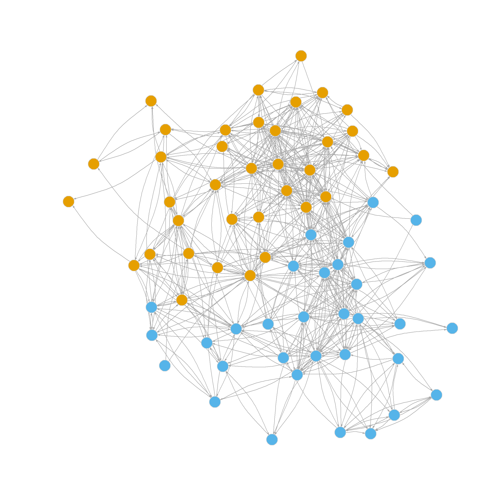
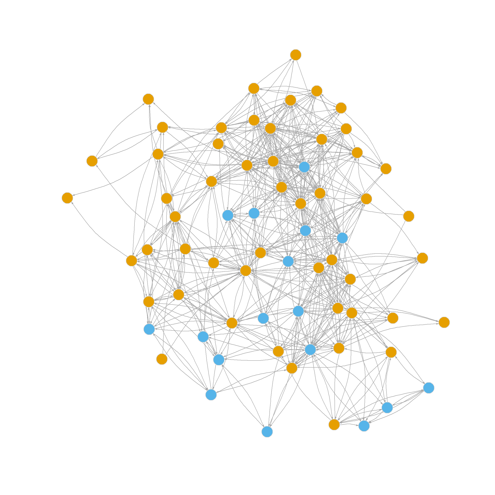
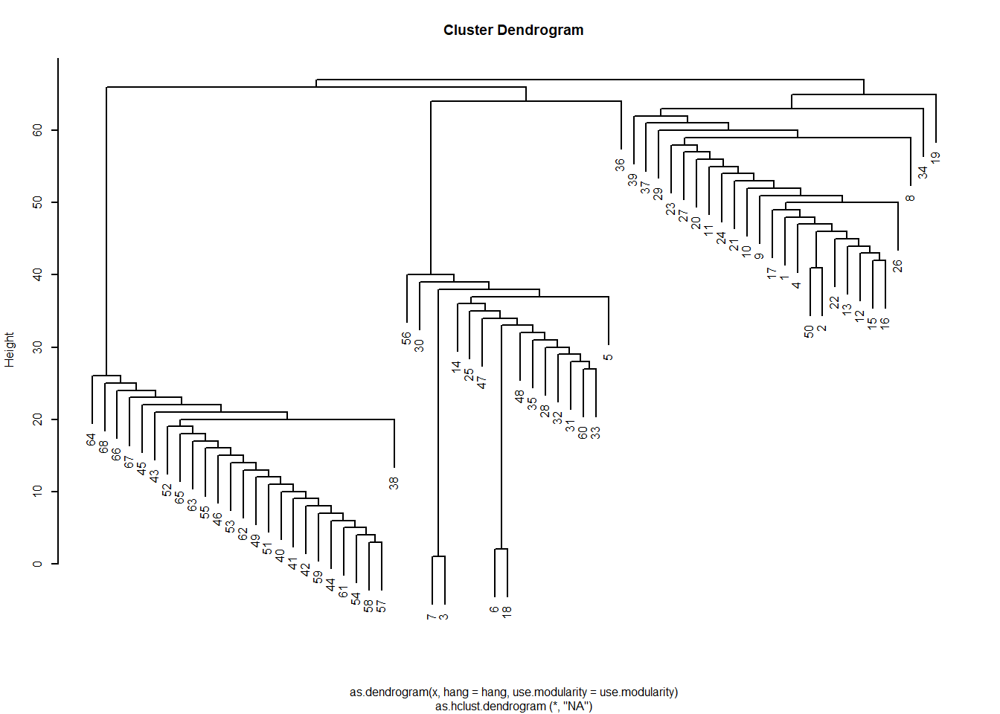
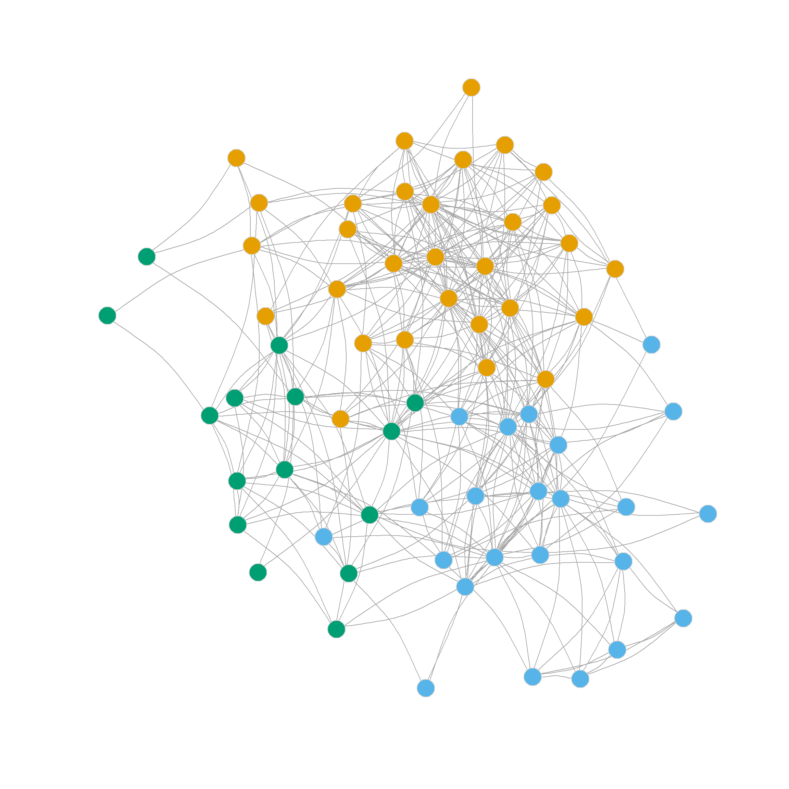
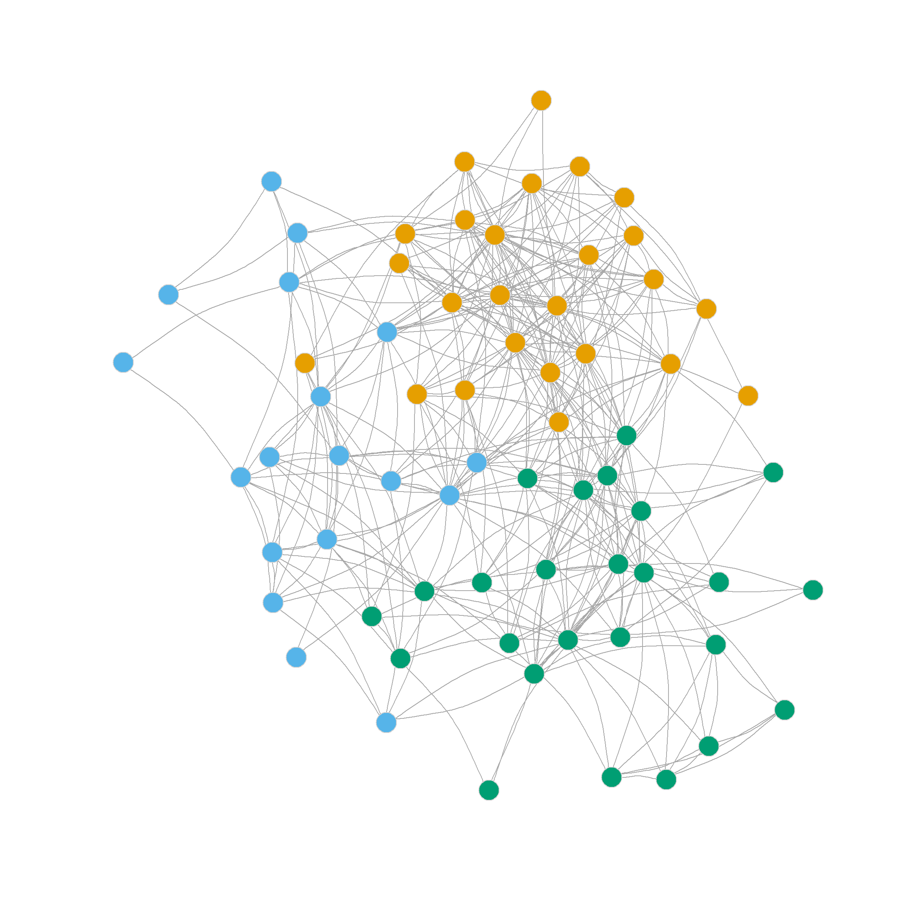

What are communities? In networks, communities are subsets of nodes that have more interactions or connectivity within themselves than outside of themselves (these are sometimes called “modules” outside sociology). Communities thus exemplify the sociological concept of a group.
A network has community structure if it contains many such subsets or groups of nodes that interact preferentially with one another. Not all networks have to have community structure; a network in which all nodes interact with equal propensity doesn’t have communities.
So whether a network has community structure, and whether a given guess about what these communities are yields actual communities (a cluster of nodes that interact more among themselves than with outsiders) is an empirical question that needs to be answered with data.
But first, we need to develop a criterion for determining whether a given partition of the network into mutually exclusive node subsets actually produces communities as we defined them earlier. This criterion should be independent of particular methods and algorithms that claim to find communities, so that we can compare them with one another and see whether the partitions they recommend yield actual communities.
Mark Newman (2006b), who has done the most influential work in this area, proposed such a criterion and called it the modularity of a partition (e.g., the extent to which a partition has identified the “modules” or subsets of the network).
2 A bag of links
An intuitive way to understand the modularity is as follows. Imagine we have an idea of what the communities in a network are. This could be given by a special community partitioning method, our intuition, or exogenous node coloring (e.g., based on a node attribute such as race, gender, or position in the organization). The membership of each node in each community is thus stored in a vector, \(C_i = k\) if node \(i\) belongs to community \(k\); this vector is of length \(N\) where \(N\) is the number of nodes in the network.
Our job is to decide whether that community partition is good, in the sense of dividing the nodes into subsets that interact preferentially with one another and not with outsiders.
One way to proceed is to imagine that we take the network in question, and we throw each observed link into a bag. Then our modularity measure should give us an idea of the probability that, if we drew a link at random, the nodes at its ends belong to the same community (or have the same color if the communities are defined by exogenous attributes). If the probability is high, then the network has a community structure. If the probability is no better than we would expect under a null model that assumes nothing is going on in the network connectivity-wise except random chance, then the modularity should be low (and we decide that the partition we chose does not divide the network into meaningful communities).
Let’s assume our bag of links contains only directed links, and we draw a bunch of them at random. Let’s call the node at the starting end of the link \(s\) and the node at the destination end of the link \(d\). Then we can measure the modularity—let’s call it \(Q\)—of a given partition of the network into \(m\) clusters as follows:
In this equation, \(P(s \in k \land d \in k)\) is the probability that a link drawn at random has a source and a destination node that belong to the same community \(k\); \(P(s \in k)\) is just the probability of drawing a link that has a starting node in community \(k\) (regardless of the membership of the destination node) and \(P(d \in k)\) is the probability of drawing a link that has a destination node that belongs to community \(k\) (regardless of the membership fo the source node).
If you remember your elementary probability theory, you know that the joint probability of two events that are assumed to be independent of one another is just the product of their individual probabilities. So that means that \(P(s \in k) \times P(d \in k)\) is the expected probability of finding that both the source and destination node are in the same community \(k\) in a network in which communities don’t matter for link formation (because the two probabilities are assumed to be independent).
So the formula for the modularity subtracts the observed probability of finding links with two nodes in the same community from what we would expect if communities didn’t matter. So it measures the extent to which we find within-community links in the network beyond what we would expect by chance. Obviously, the higher this number, the higher the deviation from chance is, and the more community structure there is in the network.
Let’s move to a real example. shows two plots of the friendship nomination network from the law_friends data (Lazega 2001) from the networkdata package (dropping nodes that have a degree of one). The first shows nodes colored by status within the firm (partners in tan, associates in blue), and the other shows nodes colored by gender (men in tan, women in blue).
It is pretty evident that there is more community partitioning in the network by status than by gender; that is, friendship nominations tend to go from people of a given rank to people of the same rank, which makes sense. So a measure of modularity should be higher when using status as our partition than when using gender.

(a) Nodes colored by status (Partner/Associate).

(b) Nodes colored by Gender (Men/Women).
Figure 1: Law Firm Friendship Network.
Let’s see an example of the modularity computed using our “bag of links” framework. Below is a quick function that uses dplyr to take a graph as input and return an edge list data frame containing the “community membership” of each node for the characteristic specified by the second input.
Code
link.bag <-function(x, c) {library(dplyr) g.el <-data.frame(as_edgelist(x))names(g.el) <-c("vi", "vj") comm.dat <-data.frame(vi =as.vector(V(x)), vj =as.vector(V(x)), c =as.vector(c)) el.temp <-data.frame(vj = g.el[, 2]) %>%left_join(comm.dat, by ="vj") %>% dplyr::select(c("vj", "c")) %>%rename(c2 = c) d.el <-data.frame(vi = g.el[, 1]) %>%left_join(comm.dat, by ="vi") %>% dplyr::select(c("vi", "c")) %>%rename(c1 = c) %>%cbind(el.temp)return(d.el) }
So if we wanted an edge list data frame containing each node’s status membership in the law_advice network, we would just type:
Note that an edge list is already a “bag of links,” so we can obtain the three probabilities we need to compute the modularity of a partition directly from the edge list data frame. Here’s a function that does this:
This function takes the edge list data frame as input. Optionally, you can specify the two columns containing community membership info for the source and destination nodes in each link (in this case, the second and fourth columns). The Function works like this:
The probability of a link drawn randomly from the bag is just the number of links where the source and destination links belong to the same community (e.same, computed in line 5) divided by the total number of links (which is the number of rows in the edge list data frame), this ratio is computed in line 9 (p.same).
The overall probability of a link containing a source node in community \(k\) is computed in line 10 (p.sour), and the overall probability of a link containing a destination node in community \(k\) is computed in line 11 (p.dest).
The actual modularity is computed step by step by summation across levels of the community indicator variable in line 12, which is the sum of the difference between p.same and the product of p.sour times p.dest across all communities \(m\) (in this case \(m = 2\) as there are only two levels of status).
So if we wanted to check if status was more powerful in structuring the community organization of the law_friends network than gender, we would just type:
Code
mod.Q1(link.bag(g, V(g)$status))
[1] 0.2715221
Code
mod.Q1( link.bag(g, V(g)$gender))
[1] 0.07495538
This indeed confirms that status is a more powerful group formation principle than gender in this network.
3 Modularity from the Adjacency Matrix
Note that while the “bag of links” idea is useful for illustrating the basic probabilistic principle behind modularity in a network, we can compute it directly from the adjacency matrix without going through the edge-list data-frame construction step.
This function takes a graph and a vector indicating each node’s community membership and returns the modularity. Like before the modularity is the difference in the probability of observing a within-community link between two nodes (given by the ratio of the number of links in the sub-adjacency matrix containing only within community-nodes—obtained in line 7—and the overall number of links in the adjacency matrix, computed in line 3) and the expected probability of a link between a source node with community membership \(k\) and a destination node with the same community membership.
This last quantity is given by the product of the sum links in a the sub-adjacency matrix with row nodes that belong to community \(k\) (the source nodes) and the number of links in the sub adjacency matrix with the column nodes belonging to community \(k\) (the destination nodes) divided by the square of the total number of links observed the network.
Where \(\sum_i \sum_ja_{ij}\) is the sum of all the entries in the network adjacency matrix, \(\sum_{i \in k} \sum_{j \in k} a_{ij}\) is the sum of all the entries of the sub-adjacency matrix where both the row and column nodes come from community \(k\), \(\sum_{i \in k} \sum_j a_{ij}\) is the sum of all the entries in the sub-adjacency matrix where only the row nodes come from community \(k\), and \(\sum_i \sum_{j \in k} a_{ij}\) is the sum of all the entries in the sub-adjacency matrix where only the column nodes come from community \(k\).
We can easily see that this approach gives us the same answer as the bag of links version:
Code
mod.Q2(g, V(g)$status)
[1] 0.2715221
Code
mod.Q2(g, V(g)$gender)
[1] 0.07495538
Of course, you don’t even have to use a custom function like the above, because igraph has one, called (you guessed it) modularity:
Code
modularity(g, V(g)$status)
[1] 0.2715221
Code
modularity(g, V(g)$gender)
[1] 0.07495538
But at least now you know what’s going on inside of it!
4 The Modularity Matrix
Obviously, modularity wouldn’t be widely used if it were merely a way to measure the quality of a community partition produced by other methods. It can be used to find community partitions by a method that produces a node partition capturing the largest values it can take in a graph.
A useful tool in this quest is the modularity matrix\(\mathbf{B}\)(Newman 2006b), which is defined as a variation on the adjacency matrix \(\mathbf{A}\), where each cell of the modularity matrix \(b_{ij}\) takes the value:
Where \(k^{out}_i\) is node \(i\)’s outdegree and \(k^{in}_j\) is node j’s indegree. Note that the modularity matrix has the same “observed minus expected” structure as the formulas for the modularity. In this case, we compare whether we see a link from \(i\) to \(j\) as given by \(a_{ij}\) against the chances of observing a link in a graph in which nodes connect at random with probability proportional to their degrees (as given by the right-hand side fraction).
Note that if the graph is undirected, the modularity matrix is just:
A function to compute the modularity matrix by looping through every element of the adjacency matrix for a directed graph looks like:
Code
mod.mat <-function(x){ A <-as.matrix(as_adjacency_matrix(x)) od <-rowSums(A) #outdegrees id <-colSums(A) #indegrees vol <-sum(A) n <-nrow(A) B <-matrix(0, n, n)for (i in1:n){for (j in1:n) { B[i,j] <- A[i,j] - ((od[i]*id[j])/vol) } }return(B) }
Interestingly, the matrix has some negative entries, some positive entries, and some close to or actually zero. We interpret these as follows: If an entry is negative, it means that a link between the row and column nodes is much less likely to happen than expected given each node’s degrees, a positive entry indicates the opposite; a larger than expected chance of a link forming. Entries close to zero indicate those nodes have odds close to a random chance of forming a tie.
Of course, igraph has a function, called modularity_matrix, which gives us the same result:
Which makes \(\mathbf{B}\)doubly centered a neat but so far useless property.
5 Using the Modularity Matrix to Find the Modularity of a Partition
A more interesting property of the modularity matrix is that we can use it to compute the actual modularity of a given binary partition of the network into clusters. Let’s take status in the law_friends network as an example.
First, we create a new vector \(\mathbf{s}\) that equals one when node \(i\) is in the first group (partners) and minus one when node \(i\) is in the second group (associates):
Code
s <-V(g)$status s[which(s==1)] <-1 s[which(s==2)] <--1 s
A <-as.matrix(as_adjacency_matrix(g))as.numeric(t(s) %*% B %*% s)/(2*sum(A))
[1] 0.2715221
You can think of the \(\mathbf{s}\) vector as identifying the binary community membership via contrast coding.
We can also use the modularity matrix to find the modularity of a partition via dummy coding. To do this, we create two vectors for each level of the group membership variable with \(u^{(1)}_i = 1\) when when node \(i\) is a partner (otherwise \(u^{(1)}_i = 0\)), and \(u^{(2)}_i = 1\) when when node \(i\) is an associate (otherwise \(u^{(2)}_i = 0\)).
In R, we can do this as follows:
Code
u1 <-rep(0, length(V(g)$status)) u2 <-rep(0, length(V(g)$status)) u1[which(V(g)$status==1)] <-1 u2[which(V(g)$status==2)] <-1
We then join the two vectors into a matrix \(\mathbf{U}\) of dimensions \(n \times 2\):
Once we have this matrix, the modularity of the partition is given by:
\[
\frac{tr(U^TBU)}{\sum_i\sum_ja_{ij}}
\]
Where \(tr\) denotes the trace operation in a matrix, namely, taking the sum of its diagonal elements.
We can check that this gives us the correct solution in R as follows:
Code
sum(diag(t(U) %*% B %*% U))/sum(A)
[1] 0.2715221
Neat! It makes sense (given the name of the matrix) that we can compute the modularity from \(\mathbf{B}\), and we can do it in multiple ways.
6 Using the Modularity Matrix to Find Communities
Here’s an even more useful property of the modularity matrix. Remember the network distribution game we played to define our various reflective status measures in our discussion of prestige?
Code
status1 <-function(w) { x <-rep(1, nrow(w)) #initial status vector set to all ones of length equal to the number of nodes d <-1#initial delta k <-0#initializing counterwhile (d >1e-10) { o.x <- x #old status scores x <- w %*% o.x #new scores are a function of old scores and adjacency matrix x <- x/norm(x, type ="E") #normalizing new status scores d <-abs(sum(abs(x) -abs(o.x))) #delta between new and old scores k <- k +1#incrementing while counter }return(as.vector(x)) }
This seems more interesting. The resulting “status” vector has both negative and positive entries. What if I told you that this vector is actually a partition of the original graph into two communities?
Not only that, I have even better news. This is the partition that maximizes the modularity in the graph, the best two-group partition that has the most edges within groups and the least edges going across groups.1
Let’s see some evidence for these claims in real data.
First, let’s turn the “status” vector into a community indicator vector. We assign all nodes with scores larger than zero to one community and nodes with scores equal to zero or less to the other one:
Code
C <-rep(0, length(s)) C[which(s<=0)] <-1 C[which(s >0)] <-2names(C) <-1:length(C) C
This is a pretty big score, at least larger than we obtained earlier using the exogenous indicator of status in the law firm as the basis for a binary partition. shows visual evidence that this is indeed an optimal binary partition of the law_friends network.
Of course, you may also remember from the Status and Prestige lesson that the little status game we played above is also a method (called the “power” method) of computing the leading eigenvector (the one associated with the largest eigenvalue) of a matrix. So turns out that the modularity maximizing bi-partition of a graph is just given by this vector:
\[
\mathbf{B}\mathbf{v} = \lambda\mathbf{v}
\]
Solving for \(\mathbf{v}\) in the equation above yields the nodes’ community memberships. In R, you can do this using the native eigen function as we did for the status scores:
Indeed, it splits the nodes in a graph into two modularity-maximizing communities.
It is clear that this approach hints at a divisive partitioning strategy, where we begin with two communities and then try to split one (or both) of those communities into two more, as with CONCOR.
However, unlike CONCOR, we don’t want to be unprincipled here because splitting a well-defined community into two just for the hell of it can actually lead to worse modularity than keeping the original larger communities.
So we need an approach that tries out splitting one of the original two communities into two smaller ones, checks the new modularity, compares it with the old, and only proceeds with the partition if the new modularity is greater than the old.
This function uses the output of the split.two function to check whether either of the two sub-communities should be split into two further sub-communities by comparing the modularities pre- and post-second partition.
Here are the results applied to the law_friends network:
Code
s <-split.mult(B = Bu, vol =sum(as.matrix(as_adjacency_matrix(ug))), u =split.two(Bu)$dummy, v =split.two(Bu)$v) s
The delta.Q vector stores the results of our modularity checks. In this case, the test in the first community failed; the modularity didn’t change (the difference between the old and the new is zero) when we tried to split into two smaller communities. This is usually indicative that the original community was a well-defined group with lots of within-cluster ties, so that splitting it makes no difference (that’s the orange nodes in the figure above).
Nevertheless, the test in the second community was positive, indicating we should split it into two. Because we left one of the original communities alone, the resulting network will have three communities after splitting the second one in two.
Note that the function returns the original two-split named vector of community assignments v, a NULL result for the first split, and a new vector assigning nodes in the second original split to two other communities (split[[2]]).
We now create a new three-community vector from these results:
shows the results of the three-community partition.
Now let’s say we wanted to check if we should further split any of these three communities into two. All we need to do is create “dummy” variables for the new three community partition and feed these (and the three community membership vector) to the split.mult function, while keeping the original modularity matrix (Newman 2006a):
Code
c1 <-rep(0, length(s$v)) c2 <-rep(0, length(s$v)) c3 <-rep(0, length(s$v)) c1[which(s$v==1)] <-1 c2[which(s$v==2)] <-1 c3[which(s$v==3)] <-1 dummies <-cbind(c1, c2, c3) s <-split.mult(B = Bu, vol =sum(as.matrix(as_adjacency_matrix(ug))), u = dummies, v = s$v) s
Here, the three modularity-split checks failed, as indicated by the delta.Q vector. So no further splits were made (hence the split object is an empty list). This tells us that, according to this method, three communities are the optimal partition.
Of course, if you are working on your project, you don’t have to mess with all of the functions above, because igraph has implemented Newman’s leading eigenvector (of the modularity matrix) community detection method (Newman 2006a) in a single function called cluster_leading_eigen.
To use it, just feed it the relevant graph:
Code
le.res <-cluster_leading_eigen(ug)
And examine the membership object stored in the results list:
Which returns identical community assignments as above (but with the labels between communities 2 and 3 flipped).
7 Communities versus Exogenous Attributes
Remember, we began this discussion using an exogenous criterion (law firm status as partner or associate) to examine the network’s community structure (which performs pretty well according to modularity). But now we have also used a pure link-based approach to finding communities. How do they compare? Here’s a way to find out:
Code
library(kableExtra) t <-table(V(ug)$status, le.res$membership)kbl(t, row.names =TRUE, align ="c", format ="html") %>%column_spec(1, bold =TRUE) %>%kable_styling(full_width =TRUE,bootstrap_options =c("hover", "condensed", "responsive"))
1
2
3
1
27
9
0
2
3
7
22
This is just a contingency table listing status in the rows (1 = partner) and the three leading eigenvector communities in the columns.
We find that community one (the most coherent, in orange) comprises 89% of partners. So it is a high-status clique. Community three (in blue), on the other hand, is composed entirely of associates, a less dense but completely homogeneous, low-status clique. Finally, community two (green) is a status-mixed clique, composed of nine partners and seven associates.
So in this network, both status and endogenous group dynamics seem to be at play.
8 An Agglomerative Approach Based on the Modularity
The leading eigenvector approach discussed above is a divisive clustering algorithm. All nodes begin in one community; we split into two, then try to split one of those two into two others (if the modularity increases), and so forth.
But as we noted in the previous handout, another way to cluster is bottom up. All nodes begin in their own singleton cluster, and we join nodes if they maximize some criterion, in this case, the modularity. We then join new nodes to that group. If they increase the modularity, we try other joins, merging communities as we go, until we can’t increase it any further.
This agglomerative approach to clustering is not guaranteed to reach a global maximum, but it can work in most applied settings, even at the risk of getting stuck in a local optimum.
Newman (2004) developed an agglomerative algorithm that optimizes the modularity, a more recent version of which is included in an igraph function called cluster_fast_greedy(Clauset et al. 2004).
Let’s try it out to see how it works:
Code
fg.res <-cluster_fast_greedy(ug)
The resulting list object has various sub-objects as components. One of them is called merges, which provides a history of the various merges that led to the final communities. This means we can view the results as a dendrogram, just as we did with structural similarity analyses based on hierarchical clustering of a distance matrix.
To do this, we just transform the resulting object into an hclust object and plot:
Code
hc <-as.hclust(fg.res)par(cex =0.5) #smaller labelsplot(hc)

This gives us the sense that the network is divided into three communities, as we saw earlier. If we wanted to see which nodes are in which, we could just cut the dendrogram at \(k = 3\):
Figure 2: Law Firm Friendship Network by The Best Binary Partition Using the Leading Eigenvector of the Modularity Matrix Approach.

Figure 3: Law Firm Friendship Network by The Best Three-Community Partition Using the Leading Eigenvector of the Modularity Matrix Approach.

Figure 4: Law Firm Friendship Network by The Best Three-Community Partition Using the Fast-Greedy Modularity Maximization Approach.
visualizes the resulting three-community partition, which is pretty close to what we got using the leading eigenvector method.
References
Brandes, Ulrik, Daniel Delling, Marco Gaertler, et al. 2007. “On Modularity Clustering.”IEEE Transactions on Knowledge and Data Engineering 20 (2): 172–88.
Clauset, Aaron, Mark EJ Newman, and Cristopher Moore. 2004. “Finding Community Structure in Very Large Networks.”Physical Review E—Statistical, Nonlinear, and Soft Matter Physics 70 (6): 066111.
Lazega, Emmanuel. 2001. The Collegial Phenomenon: The Social Mechanisms of Cooperation Among Peers in a Corporate Law Partnership. Oxford University Press.
Newman, Mark EJ. 2004. “Fast Algorithm for Detecting Community Structure in Networks.”Physical Review E—Statistical, Nonlinear, and Soft Matter Physics 69 (6): 066133.
Newman, Mark EJ. 2006a. “Finding Community Structure in Networks Using the Eigenvectors of Matrices.”Physical Review E—Statistical, Nonlinear, and Soft Matter Physics 74 (3): 036104.
Newman, Mark EJ. 2006b. “Modularity and Community Structure in Networks.”Proceedings of the National Academy of Sciences 103 (23): 8577–82.
Footnotes
Actually, this is not true; finding the partition that maximizes the modularity in a graph is an NP hard problem (Brandes et al. 2007), so this is just a pretty good approximation of that.↩︎
Source Code
---title: "Community Structure"---## What are communities?What are communities? In networks, communities are subsets of nodes that have more interactions or connectivity within themselves than outside of themselves (these are sometimes called "modules" outside sociology). Communities thus exemplify the sociological concept of a **group**. A network has *community structure* if it contains many such subsets or groups of nodes that interact preferentially with one another. Not all networks have to have community structure; a network in which all nodes interact with equal propensity doesn't have communities.So whether a network has community structure, and whether a given guess about what these communities are yields actual *communities* (a cluster of nodes that interact more among themselves than with outsiders) is an empirical question that needs to be answered with data.But first, we need to develop a criterion for determining whether a given partition of the network into mutually exclusive node subsets actually produces *communities* as we defined them earlier. This criterion should be independent of particular methods and algorithms that claim to find communities, so that we can compare them with one another and see whether the partitions they recommend yield actual communities.Mark @newman06a, who has done the most influential work in this area, proposed such a criterion and called it the **modularity** of a partition (e.g., the extent to which a partition has identified the "modules" or subsets of the network). ## A bag of linksAn intuitive way to understand the modularity is as follows. Imagine we have an idea of what the communities in a network are. This could be given by a special community partitioning method, our intuition, or exogenous node coloring (e.g., based on a node attribute such as race, gender, or position in the organization). The membership of each node in each community is thus stored in a vector, $C_i = k$ if node $i$ belongs to community $k$; this vector is of length $N$ where $N$ is the number of nodes in the network. Our job is to decide whether that community partition is good, in the sense of dividing the nodes into subsets that interact preferentially with one another and not with outsiders. One way to proceed is to imagine that we take the network in question, and we throw each observed link into a bag. Then our modularity measure should give us an idea of the probability that, if we drew a link at random, the nodes at its ends belong to the same community (or have the same color if the communities are defined by exogenous attributes). If the probability is high, then the network has a community structure. If the probability is no better than we would expect under a null model that assumes nothing is going on in the network connectivity-wise except random chance, then the modularity should be low (and we decide that the partition we chose does not divide the network into meaningful communities). Let's assume our bag of links contains only directed links, and we draw a bunch of them at random. Let's call the node at the starting end of the link $s$ and the node at the destination end of the link $d$. Then we can measure the modularity---let's call it $Q$---of a given partition of the network into $m$ clusters as follows:$$Q = \sum_{k = 1}^m \left[P(s \in k \land d \in k) - P(s \in k) \times P(d \in k) \right]$$In this equation, $P(s \in k \land d \in k)$ is the probability that a link drawn at random has a source and a destination node that belong to the same community $k$; $P(s \in k)$ is just the probability of drawing a link that has a starting node in community $k$ (regardless of the membership of the destination node) and $P(d \in k)$ is the probability of drawing a link that has a destination node that belongs to community $k$ (regardless of the membership fo the source node).If you remember your elementary probability theory, you know that the *joint* probability of two events that are assumed to be *independent* of one another is just the product of their individual probabilities. So that means that $P(s \in k) \times P(d \in k)$ is the expected probability of finding that both the source and destination node are in the same community $k$ in a network in which communities don't matter for link formation (because the two probabilities are assumed to be independent).So the formula for the modularity subtracts the observed probability of finding links with two nodes in the same community from what we would expect if communities didn't matter. So it measures the extent to which we find within-community links in the network beyond what we would expect by chance. Obviously, the higher this number, the higher the deviation from chance is, and the more community structure there is in the network. Let's move to a real example. shows two plots of the friendship nomination network from the `law_friends` data [@lazega01] from the `networkdata` package (dropping nodes that have a degree of one). The first shows nodes colored by status within the firm (partners in tan, associates in blue), and the other shows nodes colored by gender (men in tan, women in blue). It is pretty evident that there is more community partitioning in the network by status than by gender; that is, friendship nominations tend to go from people of a given rank to people of the same rank, which makes sense. So a measure of modularity should be higher when using status as our partition than when using gender.```{r}#| label: fig-friends#| fig-cap: "Law Firm Friendship Network."#| fig-height: 12#| fig-width: 12#| fig-subcap:#| - "Nodes colored by status (Partner/Associate)."#| - "Nodes colored by Gender (Men/Women)."#| layout-ncol: 2#| echo: falselibrary(networkdata)library(igraph) g <- law_friends g <-subgraph(g, degree(g) >=2)set.seed(123) l <-layout_with_kk(g)V(g)$color <-V(g)$statusplot(g, layout = l,vertex.size=6, vertex.frame.color="lightgray", vertex.label =NA, edge.arrow.size =0.25,vertex.label.dist=1, edge.curved=0.2)V(g)$color <-V(g)$genderplot(g, layout = l,vertex.size=6, vertex.frame.color="lightgray", vertex.label =NA, edge.arrow.size =0.25,vertex.label.dist=1, edge.curved=0.2)```Let's see an example of the modularity computed using our "bag of links" framework. Below is a quick function that uses `dplyr` to take a graph as input and return an **edge list** data frame containing the "community membership" of each node for the characteristic specified by the second input.```{r} link.bag <-function(x, c) {library(dplyr) g.el <-data.frame(as_edgelist(x))names(g.el) <-c("vi", "vj") comm.dat <-data.frame(vi =as.vector(V(x)), vj =as.vector(V(x)), c =as.vector(c)) el.temp <-data.frame(vj = g.el[, 2]) %>%left_join(comm.dat, by ="vj") %>% dplyr::select(c("vj", "c")) %>%rename(c2 = c) d.el <-data.frame(vi = g.el[, 1]) %>%left_join(comm.dat, by ="vi") %>% dplyr::select(c("vi", "c")) %>%rename(c1 = c) %>%cbind(el.temp)return(d.el) }```So if we wanted an edge list data frame containing each node's status membership in the `law_advice` network, we would just type:```{r} link.dat <-link.bag(g, V(g)$status)head(link.dat)```Note that an edge list is already a "bag of links," so we can obtain the three probabilities we need to compute the modularity of a partition directly from the edge list data frame. Here's a function that does this:```{r} mod.Q1 <-function(x, c1 =2, c2 =4) { Q <-0 comms <-unique(x[, c1])for (k in comms) { e.same <- x[x[, c1] == k & x[, c2] == k, ] e.sour <- x[x[, c1] == k, ] e.dest <- x[x[, c2] == k, ] e.total <-nrow(x) p.same <-nrow(e.same)/e.total p.sour <-nrow(e.sour)/e.total p.dest <-nrow(e.dest)/e.total Q <- Q + (p.same - (p.sour * p.dest)) }return(Q) }```This function takes the edge list data frame as input. Optionally, you can specify the two columns containing community membership info for the source and destination nodes in each link (in this case, the second and fourth columns). The Function works like this: - The probability of a link drawn randomly from the bag is just the number of links where the source and destination links belong to the same community (`e.same`, computed in line 5) divided by the total number of links (which is the number of rows in the edge list data frame), this ratio is computed in line 9 (`p.same`). - The overall probability of a link containing a *source* node in community $k$ is computed in line 10 (`p.sour`), and the overall probability of a link containing a *destination* node in community $k$ is computed in line 11 (`p.dest`). - The actual modularity is computed step by step by summation across levels of the community indicator variable in line 12, which is the sum of the difference between `p.same` and the product of `p.sour` times `p.dest` across all communities $m$ (in this case $m = 2$ as there are only two levels of status). So if we wanted to check if status was more powerful in structuring the community organization of the `law_friends` network than gender, we would just type:```{r}mod.Q1(link.bag(g, V(g)$status))mod.Q1( link.bag(g, V(g)$gender))```This indeed confirms that status is a more powerful group formation principle than gender in this network. ## Modularity from the Adjacency MatrixNote that while the "bag of links" idea is useful for illustrating the basic probabilistic principle behind modularity in a network, we can compute it directly from the adjacency matrix without going through the edge-list data-frame construction step. A function that does this looks like:```{r} mod.Q2 <-function(x, c) { A <-as.matrix(as_adjacency_matrix(x)) vol <-sum(A) Q <-0for (k inunique(c)) { A.sub <- A[which(c == k), which(c == k)] vol.k <-sum(A.sub) A.i <- A[which(c == k), ] A.j <- A[, which(c == k)] Q <- Q + ((vol.k/vol) - ((sum(A.i) *sum(A.j))/vol^2)) }return(Q) }```This function takes a graph and a vector indicating each node's community membership and returns the modularity. Like before the modularity is the difference in the probability of observing a within-community link between two nodes (given by the ratio of the number of links in the sub-adjacency matrix containing only within community-nodes---obtained in line 7---and the overall number of links in the adjacency matrix, computed in line 3) and the *expected* probability of a link between a source node with community membership $k$ and a destination node with the same community membership. This last quantity is given by the product of the sum links in a the sub-adjacency matrix with *row nodes* that belong to community $k$ (the source nodes) and the number of links in the sub adjacency matrix with the *column nodes* belonging to community $k$ (the destination nodes) divided by the *square* of the total number of links observed the network. In formulese:$$ Q = \sum_{k=1}^m \left[\frac{\sum_{i \in k} \sum_{j \in k} a_{ij}}{\sum_i \sum_j a_{ij}} - \frac{(\sum_{i \in k} \sum_j a_{ij})(\sum_i \sum_{j \in k} a_{ij})}{(\sum_i \sum_j a_{ij})^2} \right]$$ {#eq-mod}Where $\sum_i \sum_ja_{ij}$ is the sum of all the entries in the network adjacency matrix, $\sum_{i \in k} \sum_{j \in k} a_{ij}$ is the sum of all the entries of the sub-adjacency matrix where *both* the row and column nodes come from community $k$, $\sum_{i \in k} \sum_j a_{ij}$ is the sum of all the entries in the sub-adjacency matrix where only the row nodes come from community $k$, and $\sum_i \sum_{j \in k} a_{ij}$ is the sum of all the entries in the sub-adjacency matrix where only the column nodes come from community $k$.We can easily see that this approach gives us the same answer as the bag of links version:```{r}mod.Q2(g, V(g)$status)mod.Q2(g, V(g)$gender)```Of course, you don't even have to use a custom function like the above, because `igraph` has one, called (you guessed it) `modularity`:```{r}modularity(g, V(g)$status)modularity(g, V(g)$gender)```But at least now you know what's going on inside of it!## The Modularity MatrixObviously, modularity wouldn't be widely used if it were merely a way to measure the quality of a community partition produced by other methods. It can be used to find community partitions by a method that produces a node partition capturing the largest values it can take in a graph.A useful tool in this quest is the **modularity matrix** $\mathbf{B}$ [@newman06a], which is defined as a variation on the adjacency matrix $\mathbf{A}$, where each cell of the modularity matrix $b_{ij}$ takes the value:$$b_{ij} = a_{ij} - \frac{k^{out}_ik^{in}_j}{\sum_i\sum_j a_{ij}}$$Where $k^{out}_i$ is node $i$'s outdegree and $k^{in}_j$ is node j's indegree. Note that the modularity matrix has the same "observed minus expected" structure as the formulas for the modularity. In this case, we compare whether we see a link from $i$ to $j$ as given by $a_{ij}$ against the chances of observing a link in a graph in which nodes connect at random with probability proportional to their degrees (as given by the right-hand side fraction). Note that if the graph is undirected, the modularity matrix is just:$$b_{ij} = a_{ij} - \frac{k_ik_j}{\sum_i\sum_j a_{ij}}$$A function to compute the modularity matrix by looping through every element of the adjacency matrix for a directed graph looks like:```{r} mod.mat <-function(x){ A <-as.matrix(as_adjacency_matrix(x)) od <-rowSums(A) #outdegrees id <-colSums(A) #indegrees vol <-sum(A) n <-nrow(A) B <-matrix(0, n, n)for (i in1:n){for (j in1:n) { B[i,j] <- A[i,j] - ((od[i]*id[j])/vol) } }return(B) }```Peeking inside the resulting matrix:```{r}round(mod.mat(g)[1:10, 1:10], 3)```Interestingly, the matrix has some negative entries, some positive entries, and some close to or actually zero. We interpret these as follows: If an entry is negative, it means that a link between the row and column nodes is much less likely to happen than expected given each node's degrees, a positive entry indicates the opposite; a larger than expected chance of a link forming. Entries close to zero indicate those nodes have odds close to a random chance of forming a tie.Of course, `igraph` has a function, called `modularity_matrix`, which gives us the same result:```{r} B <-modularity_matrix(g)round(B[1:10, 1:10], 3)```In the case of an undirected graph, computing the modularity is even simpler:```{r} mod.mat.u <-function(x){ A <-as.matrix(as_adjacency_matrix(x)) d <-rowSums(A) #degrees vol <-sum(A) n <-nrow(A) B <- A - (d %*%t(d)/vol)return(B) }```Let's see the function in action:```{r} ug <-as_undirected(g, mode ="collapse") Bu <-mod.mat.u(ug)round(Bu[1:10, 1:10], 2)```Which gives us the same results as using `igraph`:```{r} Bu <-modularity_matrix(ug, directed =FALSE)round(Bu[1:10, 1:10], 2)```The modularity matrix has some interesting properties. For instance, *both* its rows and columns sum to zero:```{r}round(rowSums(Bu), 2)round(colSums(Bu), 2)```Which makes $\mathbf{B}$ **doubly centered** a neat but so far useless property. ## Using the Modularity Matrix to Find the Modularity of a PartitionA more interesting property of the modularity matrix is that we can use it to compute the actual modularity of a given binary partition of the network into clusters. Let's take status in the `law_friends` network as an example. First, we create a new vector $\mathbf{s}$ that equals one when node $i$ is in the first group (partners) and minus one when node $i$ is in the second group (associates):```{r} s <-V(g)$status s[which(s==1)] <-1 s[which(s==2)] <--1 s```Once we have this vector, the modularity is just:$$Q = \frac{\mathbf{s}^T\mathbf{B}\mathbf{s}}{2\sum_i\sum_ja_{ij}}$$Which we can readily check in `R`:```{r} A <-as.matrix(as_adjacency_matrix(g))as.numeric(t(s) %*% B %*% s)/(2*sum(A))```You can think of the $\mathbf{s}$ vector as identifying the binary community membership via **contrast coding**. We can also use the modularity matrix to find the modularity of a partition via **dummy coding**. To do this, we create two vectors for each level of the group membership variable with $u^{(1)}_i = 1$ when when node $i$ is a partner (otherwise $u^{(1)}_i = 0$), and $u^{(2)}_i = 1$ when when node $i$ is an associate (otherwise $u^{(2)}_i = 0$).In `R`, we can do this as follows:```{r} u1 <-rep(0, length(V(g)$status)) u2 <-rep(0, length(V(g)$status)) u1[which(V(g)$status==1)] <-1 u2[which(V(g)$status==2)] <-1```We then join the two vectors into a matrix $\mathbf{U}$ of dimensions $n \times 2$:```{r} U <-cbind(u1, u2)head(U)tail(U)```Once we have this matrix, the modularity of the partition is given by:$$\frac{tr(U^TBU)}{\sum_i\sum_ja_{ij}}$$Where $tr$ denotes the **trace** operation in a matrix, namely, taking the sum of its diagonal elements. We can check that this gives us the correct solution in `R` as follows:```{r}sum(diag(t(U) %*% B %*% U))/sum(A)```Neat! It makes sense (given the name of the matrix) that we can compute the modularity from $\mathbf{B}$, and we can do it in multiple ways.## Using the Modularity Matrix to Find CommunitiesHere's an even more useful property of the modularity matrix. Remember the network distribution game we played to define our various reflective status measures in our discussion of [prestige](prest-eigen.qmd)? ```{r} status1 <-function(w) { x <-rep(1, nrow(w)) #initial status vector set to all ones of length equal to the number of nodes d <-1#initial delta k <-0#initializing counterwhile (d >1e-10) { o.x <- x #old status scores x <- w %*% o.x #new scores are a function of old scores and adjacency matrix x <- x/norm(x, type ="E") #normalizing new status scores d <-abs(sum(abs(x) -abs(o.x))) #delta between new and old scores k <- k +1#incrementing while counter }return(as.vector(x)) }```What if we played it with the modularity matrix? ```{r} s <-status1(Bu)round(s,2)```This seems more interesting. The resulting "status" vector has both negative and positive entries. What if I told you that this vector is actually a **partition** of the original graph into two communities? Not only that, I have even better news. This is the partition that *maximizes* the modularity in the graph, the best two-group partition that has the most edges within groups and the least edges going across groups.^[Actually, this is not true; finding the partition that maximizes the modularity in a graph is an NP hard problem [@brandes07], so this is just a pretty good approximation of that.]Let's see some evidence for these claims in real data. First, let's turn the "status" vector into a community indicator vector. We assign all nodes with scores larger than zero to one community and nodes with scores equal to zero or less to the other one:```{r} C <-rep(0, length(s)) C[which(s<=0)] <-1 C[which(s >0)] <-2names(C) <-1:length(C) C```And for the big check:```{r}modularity(ug, C)```This is a pretty big score, at least larger than we obtained earlier using the exogenous indicator of status in the law firm as the basis for a binary partition. shows visual evidence that this is indeed an optimal binary partition of the `law_friends` network.Of course, you may also remember from the [Status and Prestige](prest-eigen.qmd) lesson that the little status game we played above is also a method (called the "power" method) of computing the **leading eigenvector** (the one associated with the largest eigenvalue) of a matrix. So turns out that the modularity maximizing bi-partition of a graph is just given by this vector:$$\mathbf{B}\mathbf{v} = \lambda\mathbf{v}$$Solving for $\mathbf{v}$ in the equation above yields the nodes' community memberships. In `R`, you can do this using the native `eigen` function as we did for the status scores:```{r} v <-eigen(Bu)$vectors[, 1] round(v, 2)```Which look like the same values we obtained earlier.We can package all of the steps above into a simple function:```{r} split.two <-function(x) { e <-eigen(x)$vectors[, 1] v <-rep(0, length(e)) v[e<=0] <-1 v[e >0] <-2names(v) <-1:length(v) c1 <-rep(0, length(v)) c2 <-rep(0, length(v)) c1[which(v ==1)] <-1 c2[which(v ==2)] <-1 dummy <-cbind(c1, c2)return(list(v = v, dummy = dummy)) }```And check to see if it works:```{r}split.two(Bu)$v```Indeed, it splits the nodes in a graph into two modularity-maximizing communities. It is clear that this approach hints at a divisive partitioning strategy, where we begin with two communities and then try to split one (or both) of those communities into two more, as with CONCOR. However, unlike CONCOR, we don't want to be unprincipled here because splitting a well-defined community into two just for the hell of it can actually lead to *worse* modularity than keeping the original larger communities. So we need an approach that *tries out* splitting one of the original two communities into two smaller ones, checks the new modularity, compares it with the old, and only proceeds with the partition if the new modularity is greater than the old. Here's one way of doing that:```{r} split.mult <-function(B, vol, u, v, s =0.01) { split <-list() delta.Q <-rep(0, max(v))for (i in1:max(v)) { old.Q <-t(u[, i]) %*% B %*% u[, i] #Using dummy coding to compute Q sub <-which(u[, i] ==1) new.B <- B[sub, sub] new.u <-split.two(new.B)$dummy new.v <-split.two(new.B)$v Q1 <-t(new.u[, 1]) %*% new.B %*% new.u[, 1] #Using dummy coding to compute Q Q2 <-t(new.u[, 2]) %*% new.B %*% new.u[, 2] #Using dummy coding to compute Q new.Q <- Q1 + Q2 delta.Q[i] <- (new.Q - old.Q) * (1/vol)if (delta.Q[i] > s) { split[[i]] <- new.vnames(split[[i]]) <-which(u[, i] ==1) }elseif (delta.Q[i] <= s) { split[[i]] <-NULL } }return(list(delta.Q =round(delta.Q, 3), v = v, split = split)) }```This function uses the output of the `split.two` function to check whether either of the two sub-communities should be split into two further sub-communities by comparing the modularities pre- and post-second partition. Here are the results applied to the `law_friends` network:```{r} s <-split.mult(B = Bu, vol =sum(as.matrix(as_adjacency_matrix(ug))), u =split.two(Bu)$dummy, v =split.two(Bu)$v) s```The `delta.Q` vector stores the results of our modularity checks. In this case, the test in the first community failed; the modularity didn't change (the difference between the old and the new is zero) when we tried to split into two smaller communities. This is usually indicative that the original community was a well-defined **group** with lots of within-cluster ties, so that splitting it makes no difference (that's the orange nodes in the figure above).Nevertheless, the test in the second community was positive, indicating we should split it into two. Because we left one of the original communities alone, the resulting network will have three communities after splitting the second one in two. Note that the function returns the original two-split named vector of community assignments `v`, a `NULL` result for the first split, and a new vector assigning nodes in the second original split to two other communities (`split[[2]]`). We now create a new three-community vector from these results:```{r} s$v[names(s$split[[2]])] <- s$split[[2]] +1 s$v``` shows the results of the three-community partition.Now let's say we wanted to check if we should *further* split any of these three communities into two. All we need to do is create "dummy" variables for the new three community partition and feed these (and the three community membership vector) to the `split.mult` function, while keeping *the original* modularity matrix [@newman06b]:```{r} c1 <-rep(0, length(s$v)) c2 <-rep(0, length(s$v)) c3 <-rep(0, length(s$v)) c1[which(s$v==1)] <-1 c2[which(s$v==2)] <-1 c3[which(s$v==3)] <-1 dummies <-cbind(c1, c2, c3) s <-split.mult(B = Bu, vol =sum(as.matrix(as_adjacency_matrix(ug))), u = dummies, v = s$v) s```Here, the three modularity-split checks failed, as indicated by the `delta.Q` vector. So no further splits were made (hence the `split` object is an empty list). This tells us that, according to this method, three communities are the optimal partition. Of course, if you are working on your project, you don't have to mess with all of the functions above, because `igraph` has implemented Newman's leading eigenvector (of the modularity matrix) community detection method [@newman06b] in a single function called `cluster_leading_eigen`. To use it, just feed it the relevant graph:```{r} le.res <-cluster_leading_eigen(ug)```And examine the `membership` object stored in the results list:```{r}names(le.res$membership) <-1:length(le.res$membership) le.res$membership```Which returns identical community assignments as above (but with the labels between communities 2 and 3 flipped).## Communities versus Exogenous AttributesRemember, we began this discussion using an exogenous criterion (law firm status as partner or associate) to examine the network's community structure (which performs pretty well according to modularity). But now we have also used a pure link-based approach to finding communities. How do they compare? Here's a way to find out:```{r}library(kableExtra) t <-table(V(ug)$status, le.res$membership)kbl(t, row.names =TRUE, align ="c", format ="html") %>%column_spec(1, bold =TRUE) %>%kable_styling(full_width =TRUE,bootstrap_options =c("hover", "condensed", "responsive"))```This is just a **contingency table** listing status in the rows (1 = partner) and the three leading eigenvector communities in the columns. We find that community one (the most coherent, in orange) comprises `r round((1 - 3/27)*100)`% of partners. So it is a high-status clique. Community three (in blue), on the other hand, is composed entirely of associates, a less dense but completely homogeneous, low-status clique. Finally, community two (green) is a status-mixed clique, composed of nine partners and seven associates. So in this network, both status and endogenous group dynamics seem to be at play.## An Agglomerative Approach Based on the ModularityThe leading eigenvector approach discussed above is a **divisive** clustering algorithm. All nodes begin in one community; we split into two, then try to split one of those two into two others (if the modularity increases), and so forth.But as we noted in the previous handout, another way to cluster is *bottom up*. All nodes begin in their own singleton cluster, and we join nodes if they maximize some criterion, in this case, the modularity. We then join new nodes to that group. If they increase the modularity, we try other joins, merging communities as we go, until we can't increase it any further.This **agglomerative** approach to clustering is not guaranteed to reach a global maximum, but it can work in most applied settings, even at the risk of getting stuck in a local optimum. @newman04 developed an agglomerative algorithm that optimizes the modularity, a more recent version of which is included in an `igraph` function called `cluster_fast_greedy`[@clauset_etal04]. Let's try it out to see how it works:```{r} fg.res <-cluster_fast_greedy(ug)```The resulting list object has various sub-objects as components. One of them is called `merges`, which provides a history of the various merges that led to the final communities. This means we can view the results as a **dendrogram**, just as we did with structural similarity analyses based on hierarchical clustering of a distance matrix. To do this, we just transform the resulting object into an `hclust` object and plot:```{r} hc <-as.hclust(fg.res)par(cex =0.5) #smaller labelsplot(hc)```This gives us the sense that the network is divided into three communities, as we saw earlier. If we wanted to see which nodes are in which, we could just cut the dendrogram at $k = 3$:```{r}library(dendextend)cutree(hc, k =3)```This provides the relevant assignment to communities (if we wanted more communities, we would cut the tree at a lower height).Of course, this information was already stored in our results in the `membership` object:```{r}names(fg.res$membership) <-1:68 fg.res$membership``````{r}#| label: fig-mod#| fig-height: 12#| fig-width: 12#| fig-subcap:#| - "Law Firm Friendship Network by The Best Binary Partition Using the Leading Eigenvector of the Modularity Matrix Approach."#| - "Law Firm Friendship Network by The Best Three-Community Partition Using the Leading Eigenvector of the Modularity Matrix Approach."#| - "Law Firm Friendship Network by The Best Three-Community Partition Using the Fast-Greedy Modularity Maximization Approach."#| layout-ncol: 2#| echo: falseset.seed(123) ul <-layout_with_kk(ug)V(ug)$color <- Cplot(ug, layout = ul, vertex.size=6, vertex.frame.color="lightgray", vertex.label =NA, edge.arrow.size =0.25,vertex.label.dist=1, edge.curved=0.2)V(ug)$color <- s$vplot(ug, layout = ul, vertex.size=6, vertex.frame.color="lightgray", vertex.label =NA, edge.arrow.size =0.25,vertex.label.dist=1, edge.curved=0.2)V(ug)$color <- fg.res$membershipplot(ug, layout = ul, vertex.size=6, vertex.frame.color="lightgray", vertex.label =NA, edge.arrow.size =0.25,vertex.label.dist=1, edge.curved=0.2)``` visualizes the resulting three-community partition, which is pretty close to what we got using the leading eigenvector method.